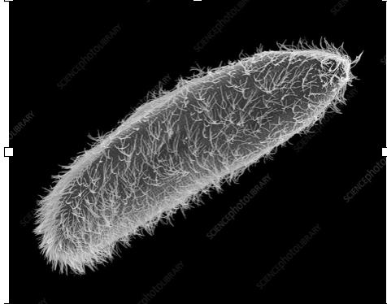

Concentration gradients drive surface slip

Surface flux \(\to\) Concentration field
\[ \frac{\partial C}{\partial t} + \boldsymbol{u}\cdot\nabla C = D\nabla^2 C, \quad \left. D\boldsymbol{n}\cdot\nabla C \right|_{\tau=\tau_0,\zeta<\zeta_0} = -A \]
\(C\): solute concentration; \(\boldsymbol{u}\): fluid velocity; \(D\): diffusivity; \(A\): surface activity / fixed solute flux on the active cap.
Tangential gradient \(\to\) Phoretic slip
\[ \boldsymbol{u}_s = M(\boldsymbol{I}-\boldsymbol{n}\boldsymbol{n})\cdot \nabla C \]
\(M\): phoretic mobility; the projection extracts the tangential concentration gradient.
Slip velocity \(\to\) Force-free propulsion
\[ \boldsymbol{u}(\tau=\tau_0) = \boldsymbol{u}_s(\zeta)+\boldsymbol{U}, \]
\[ \int_S \boldsymbol{n}\cdot\boldsymbol{\sigma}\,\mathrm{d}S = \boldsymbol{0} \]

biological propulsion analogy
Eccentricity-induced enhancement for half-coated particles

Half-coated particle: \(\zeta_0=0\)
- Sphere: \(U_1=0\) by symmetry
- Spheroid: eccentricity breaks the cancellation
- Slender shapes show pronounced enhancement
Summary
Spherical symmetry
For spheres, the first-order correction is antisymmetric and vanishes at half coverage.
Shape-induced enhancement
Slender spheroids can exhibit pronounced speed enhancement.
Tunable propulsion
Shape and surface coverage jointly determine whether viscoelasticity enhances or suppresses propulsion.
Particle shape provides a direct control parameter for active propulsion in viscoelastic fluids.